Autónomos, creadores de contenido y pymes
El restaurante existe. El anuncio no se grabó nunca.
La lámina es real. El piso donde cuelga, no.
No es una modelo retocada: no hay nadie detrás.
Una marca puede tener su cara sin fichar a nadie.
javier@mesa10studio.com
Baja para avanzar